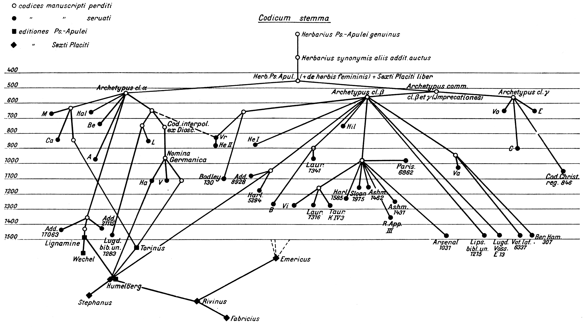
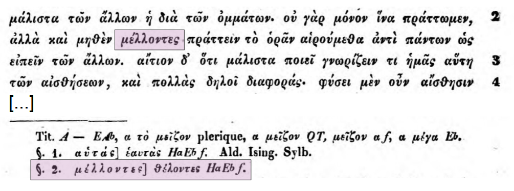
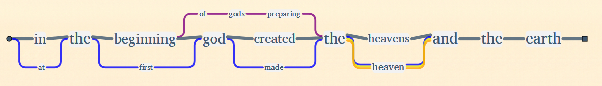
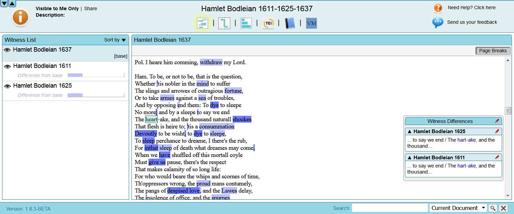
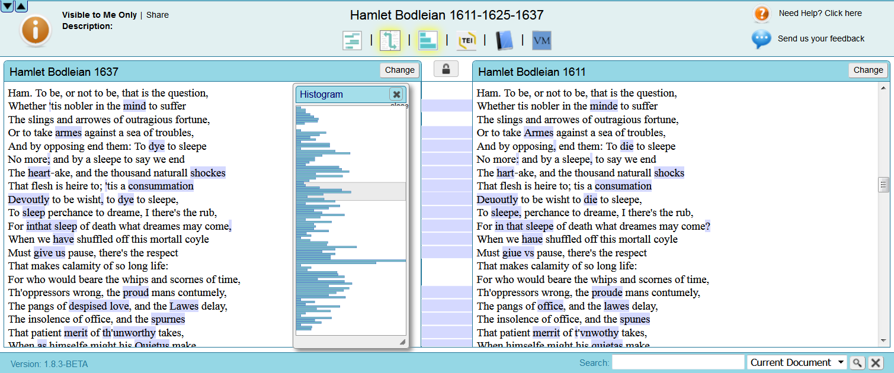
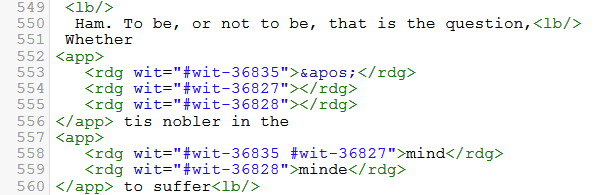
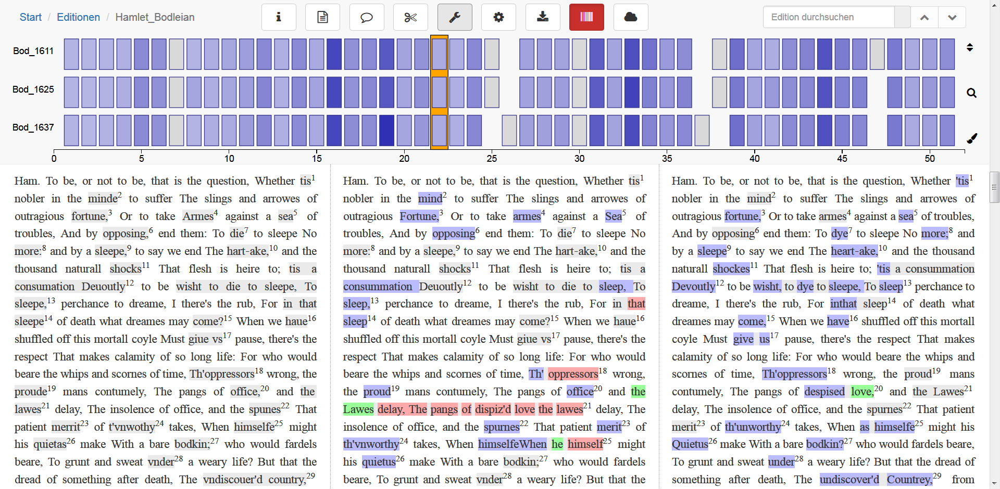
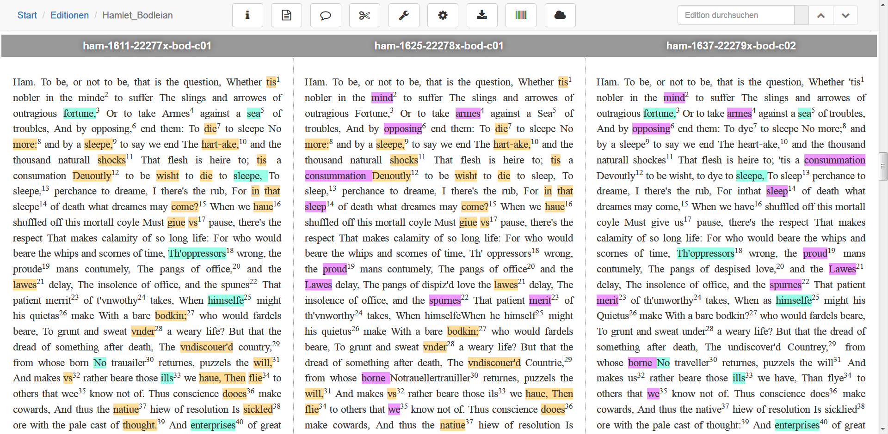
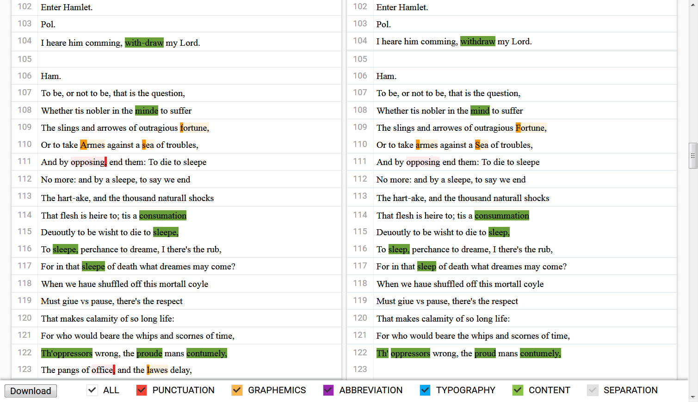
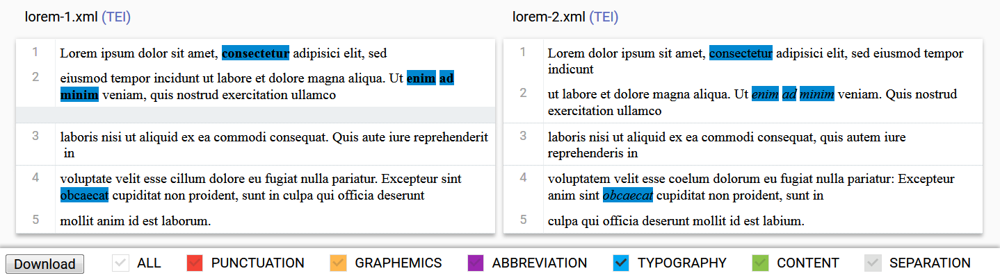

Juxta Web Service, LERA, and Variance Viewer. Web based collation tools for TEI
Table of Contents
Abstract
The review presents and compares three open source and web-based text collation tools, namely Juxta Web Service, LERA, and Variance Viewer, and investigates their suitability especially for philological work with TEI. While all tools adequately fulfill the general requirements of text collation, each of them supports individual workflow concepts and visualization methods. It is recommended that future developments consider supporting TEI standoff markup and tool modularization.
Introduction
Have you ever needed to collate two copies or editions of a historical document in order to quickly and reliably identify the differences between them? In digital scholarly editions, variant readings are often encoded manually by human editors. Tools for automatic text collation do exist, but most of them are either difficult to use, or they address specific use cases. As such, there is a need for easy-to-use, accessible, and adaptable tools which can handle textual variance and text alignment, including support for TEI-XML markup. In other words, some tools exist, but do they really fit the philological and technical requirements of researchers?
This article starts with a quick overview of text collation in philology and computer science. It goes on to develop a suitable review method and analyses three TEI-interoperable, web based collation tools: Juxta Web Service 1, LERA 2, and Variance Viewer 3. The review closes with a comparison of these tools and a discussion about workflow integration and future requirements.
This review focuses on non-proprietary online tools which require knowledge of XML-TEI, but no programming skills. For this reason, some important instruments for scholarly text collation are not included in this review, like TUSTEP4, Classical Text Editor5, Versioning Machine6, Oxygen XML Editor7 and CollateX8. Nury (2018) discusses some of these tools (and others) in her comprehensive study (Nury 2018: 205–239), and provides a detailed list of scholarly collation tools (ibid. 305–316). For a comparative overview of tools that focus on version control instead of text collation, Wikipedia hosts an exhaustive list of file comparison software9.
Perspectives on text collation
Preliminaries: text comparison and collation
Text comparison means identifying differences between two or more texts, by comparing them directly to each other. This technique is used in a broad range of scientific disciplines in which text is involved: in computer science for tracking changes in code; in jurisprudence for identifying relevant modifications of laws or contracts; even in bioinformatics for aligning DNA sequences (though DNA is not literally text) – just to give a few examples.
Often used in authoring environments, text comparison generally follows functional purposes, such as when collaborative writing teams utilize it to revert unwanted or ill-intended modifications, in teaching and academic writing in order to check for plagiarism, or in code development to avoid conflicting changes. However, another use case of text comparison exists that aims at a better understanding of cultural processes. Scholars from all historical disciplines have an interest in retracing the creation and transmission of texts in order to establish connections or divergences between them. In textual criticism, the epistemic process of text comparison is called collation (to collate: from Latin collatus, “to bring together and compare, examine critically as to agreement“; cf. Plachta 2013: 173).
The following two sections engage with divergent understandings of text: In computer science, text is understood as a linear sequence of characters stored in an electronic document (file), while in philology, text is interpreted on multiple dimensions, for example by distinguishing text as a single physical document from text as an abstract idea (for a comprehensive theory of text models, see Sahle 2013: 45–60). These two concepts operate on different levels, and a philological text collation tool needs to build a bridge between technical and scholarly understanding.
Philological aspects
a) Textual criticism

b) Traditional methods

Editors need to establish clear guidelines to define the phenomena of interest for future users of an edition and those that will be explicitly disregarded during the collation. This is also an economic decision: in many cases, tracking of graphemic variance (e.g. æ/ä) or regular orthography (e.g. color/colour) requires immense additional resources. Even if such variants are potentially interesting for later studies, the required human effort is often not justifiable. Furthermore, the more details have to be tracked, the more human errors might increase.
There are various conventional methods to present the results of a given text collation in printed editions, while digitally based presentations are still in development. Independently from the media, classical scholarly editions prefer a critical apparatus: one witness or the established critical text is chosen as base-text, while all variants are presented in footnotes or endnotes (Plachta 2013: 100–102). A more visual presentation mode is synopsis: all collated texts are presented in parallel, either in vertical or horizontal order (Plachta 2013: 106–111).
c) Advantages of digital tools
Digital tools can help. First, automatic collation can be significantly faster, if all witnesses are already fully transcribed. Philologists could focus their attention on semantics and leave the tedious letter-by-letter-collation to the machine. Or, argued from a positive perspective, the time and energy saved by automatic collation can be fully used for interpreting and refining the results.
Second, an automatic collation process would always produce the same result, thus is more reliable than a human produced collation. Furthermore, during the process of collating, humans naturally tend to produce individual interpretations and need to make assumptions on a writer’s or scribe’s possible intentions (Plachta 2013: 115–121). Instead, computers do not interpret, unless instructed to, but focus exclusively on comparing the texts. These two very different competences – precision on the one hand and interpretation on the other – could be utilized to divide the process into an automated collation layer and a human interpretation layer.

Technical aspects
a) Types of textual variation
Analyzing differences between texts implies awareness about which type of variation can actually occur. Given two sequences A and B, the two basic cases of textual difference can be described as:
- addition (B contains a sequence C which does not exist in A), e.g. read => reading
- deletion (A contains a sequence C which does not exist in B), e.g. reading => read
Two more complex categories of variation are:
- substitution (A and B contain different sequences at the same place), e.g. whether/weather
- transposition (A and B contain the same sequence at different places), e.g. plums/lumps
Identifying substitution and transposition is less trivial than additions and deletions (for an analysis on the transposition problem, see Schöch 2016). Both substitution and transposition can also be interpreted as successive additions and deletions, and this ambiguity often makes it difficult to decide what the original intention actually was. It is a philologist’s task to produce a well-founded and weighted interpretation of a scribe’s possible intentions or error’s causes. Here lies a watershed between the different procedures for identifying substitutions or transpositions in philology and computer science: a textual scholar decides by personal knowledge and experience, an algorithm by formal models.
b) Technical approaches
The first algorithms for text comparison were invented in the 1960s. The most popular example is called Levenshtein Distance (Levenshtein 1966) and expresses textual difference as ‘edit distance’, which is the calculus of the minimal number of characters that need to be added, deleted or substituted to transform sequence A into sequence B. In the 1970s, it was the Hunt-McIlroy-Algorithm which solved the longest common subsequence problem, and revolutionized file comparison when it was implemented for the Unix command ‘diff’ (Hunt and Mcllroy 1976), capable of identifying and describing differences line wise (not only character wise) in human and machine readable format. Larry Walls invented ‘patch’ in the 1980s, a Unix program capable of reverting changes by saving the difference in a separate file (“Patch” 2019). These algorithms or optimized variations of them have been in use until today.
Programming linguists and philologists have implemented collation tools since the 1960s. Collating long texts turned out to be a complex scenario, with some major developments around 1990 (Spadini 2016: 112–116). In 2009, a working group presented an abstract framework for complex text collation procedures, which was later called ‘Gothenburg model’13. It distinguishes five different computing stages (tokenization, normalization, alignment, analysis, and visualization). Nassourou (2013) proposed to extend this model by a sixth, interpretative layer. It is important to be at least aware of the existence and the functions of these layers, in order to better understand differences between individual tools, their workflows, and possibly their configuration options – and to better interpret the results.
c) General preliminaries
The following questions should be considered before starting the collation procedure:
- What is the smallest unit (token) of a compared sequence? Is it a letter, a word, a phrase or even a paragraph?
- Should normalization rules apply? Collation can be strictly character based, but often it is expected that specific differences are ignored, e.g. whitespace (sequences of more than one whitespace character are usually treated as one), abbreviations (e.g. ‘&’ as equivalent of ‘and’), spelling, or graphemics.
- Should presentational or rendering aspects be
included? In electronic texts, these are usually recorded in
markup (as in xml, html, markdown, latex and others). In TEI, a
typical use case would be the attribute
@rend. - Should collation also take the formal structure of the documents into account? E.g. in XML, should the algorithm compare every node, or focus on specified elements?
- Should subsequent additions and deletions automatically be interpreted as substitutions?
- Is it required to identify transpositions as well?
Review procedure
Method
On the one hand, the review aims at pointing out the individual strengths and specific qualities of each of the three presented tools. On the other hand, the review should also cover general aspects systematically. To this aim, a short list of basic features that helps to conduct this task, obligatory and non-obligatory, is presented first. All tools were tested with the same examples.
Requirements
The list of requirements contains both obligatory features, which are expected by each of the tested tools, and non-obligatory features, which are understood as additional ones.
- web interface for uploading two or more documents (preferably with TEI support)
- initiation of a text collation procedure
- non-obligatory: flexible collation parameters (e.g. word or letter based, normalization, etc.)
- non-obligatory: good performance with very large portions of text
- identification of basic types of textual difference (see section
on technical
approaches)
- non-obligatory: identification of sections of transposed text
- non-obligatory: automatic classification of variants in systematic groups
- browser-based visualization of the results (e.g. synopsis or apparatus, see also section on traditional methods)
- results export in any format (preferably TEI apparatus encoded)
- open source code available
- non-obligatory: easily accessible and free of charge (at least for basic services)
Examples
Although the selected tools were all intended to work as generic solutions, they have been developed from individual starting points or specific methodological perspectives on text analysis. Furthermore, there is a great variety of possible use cases – diversified by languages, epochs, genres, individual styles – which are too manifold to be adequately represented within the scope of this review. For this review, examples were chosen which are capable of demonstrating the general functionalities of the tools, while the suitability for specific use cases needs to be tested by the individual users themselves.
Two sets of texts have been used to test the tools:14
- a constructed dummy text, which is based on filler texts and covers the basic scenarios of textual variance (see section on types of textual variation).
- a real example and was taken from The Shakespeare Quartos Archive15. Shakespeare’s Hamlet, written between 1601 and 1602, is available in many printed versions which were digitized, transcribed, TEI-encoded and published under a Creative Common License (CC BY-NC 2.0). For testing on different complexity levels, another two versions of the documents were produced for this review: A smaller file containing only act 3, scene 1 (‘To be, or not to be’) with original, complex encoding, and another file with a simplified baseline encoding.
Juxta Web Service
a) Introduction
Juxta (http://www.juxtacommons.org/, tested version: 1.8.3-BETA) is a text collation software produced by the University of Virginia in 2009. It was developed into the web application ‘Juxta Web Service’ by the Networked Infrastructure for Nineteenth-Century Electronic Scholarship (NINES)16 and Performant Software with support from Gregor Middell and Ronald Dekker. It received the Google Digital Humanities Award17 in 2010 and was originally intended to become a part of Google Books. The development seems to have been discontinued in 2014 (no updates since then), and the website presents itself as ‘beta’. However, Juxta Web Service is still active, and the code is available on Github18 under an Apache 2.0 license.
b) Workflow
Juxta Web Service requires an account which can be created online free of charge with a few clicks. The collation procedure follows three steps: First, the user uploads two or more files that he/she wishes to collate and that will appear as ‘sources’ in the dashboard. Juxta WS accepts a broad range of input formats, such as TXT, XML, HTML, DOC, RTF, PDF and EPUB. The documents can also be retrieved from a URL or pasted into a text field (and, as a special feature, it is even possible to refer to Wikipedia articles and their revisions). If desired, source files can be reformatted (there is also an XML indent function) and edited directly in the browser, and saved as a new source. Secondly, each source needs to be prepared as ‘witness’. This means that a distinct name needs to be assigned to each source, while the text is being tokenized automatically in the background. The whole process becomes transparent and can also be modified in the ‘XML View’, which displays the XSLT transformation templates. For example, Juxta WS omits all elements which are not on the TEI block level (e.g. highlights) by default, unless this behavior is changed. Finally, the user selects two or more witnesses to form a ‘comparison set’. For the collation process, the user can define how punctuation, character case, hyphenation and line breaks should be handled.
c) Output
 

d) Summary
Juxta Web Service’s in-depth and thoughtfully developed features – although some of them remained in the experimental stage – make it a powerful tool. It offers a well-written documentation20 with a thorough explanation of all features. During the testing for this review, Juxta WS sporadically appeared to suffer from performance issues. The nature of the problem remained unclear, however it seemed to be related either to markup complexity or text length. Users should consider that currently, the Juxta Web Service is minimally maintained.
LERA
a) Introduction
LERA (https://lera.uzi.uni-halle.de/, tested version: 1.1.0.21) is an acronym for: ‘Locate, Explore, Retrace and Apprehend complex text variants’. It is a text collation software which was developed into a web based tool by Marcus Pöckelmann. It is part of the project SADA21 (‘Semi-automatische Differenzanalyse von komplexen Textvarianten’), which focuses on analyzing text variants at a larger scale. SADA is located at the University of Halle-Wittenberg (Germany) and was funded by the Federal Ministry of Education and Research from 2012 to 2015. LERA, as one of its parts, was designed in close collaboration with researchers from the humanities, and it received a poster award22 in 2016 at the DHd conference23 in Leipzig. The code repository is currently not accessible for the public, however it is planned to publish it in accordance with academic Open Science policies.
b) Workflow
LERA can be tried online with a few sample texts. An individual instance with full functionality is available on personal request. After login, the user can upload two or more ‘documents’ for collation. During this procedure, the user assigns a siglum and a title to each document, and optionally sets language, segmentation method, hyphenation handling, and linguistic annotation. LERA works smoothly with XML, and all settings can be changed at different stages of the process. In a second phase, the user selects a set of documents for collation, which will then be displayed as ‘edition’.
c) Output
 
d) Summary
LERA is an impressively coherent suite of tools for text alignment and collation which allows the user to flexibly combine tools and parameters for individual use cases. Two things are still on the wish list: TEI export (or another structured format like JSON) and a public code repository. The project is likely to be maintained, as it is essential for at least one ongoing large research project.
Variance Viewer
a) Introduction
Variance Viewer (http://variance-viewer.informatik.uni-wuerzburg.de/Variance-Viewer/, tested version as of June 2019) is a web application for text collation which was developed by Nico Balbach at the Department for Artificial Intelligence and Applied Computer Science of the University of Würzburg (Germany) in 2018. The idea for its development was initiated by a group of researchers from an academic working group for digital editions25. The goal was to build a generic tool which conducts common text collation tasks for different research projects. The code is available on GitHub26 under GPL 3.0 license.
b) Workflow
Variance Viewer can be used without an account. The user can
directly upload (exactly) two files to collate on a simple one page dialogue
website. Accepted formats are only XML (by default) and TXT (as fallback).
The user can upload a configuration file with customized settings (the
GitHub documentation page27
explains exactly how to set up an individual configuration file). This is
crucial when adopting Variance Viewer to individual use cases. For example,
it is possible to modify the list of XML elements whose content will be
compared: By default, these are only <p> and
<head>; all contents outside of these elements will
be excluded. The configuration file also allows the user to define
normalization rules for graphemic variance, for punctuation and
abbreviations.
c) Output
hi/@rend), and separation (whitespace), and visualizes
these with a color code (see Fig.
9). Color shades make clear whether there is only one different
character in a token (light) or more than one (dark). Each feature can be
switched on and off by using respective buttons, and it is possible to adapt
the visualization of the results by using CSS properties. This makes
Variance Viewer an excellent tool for visual analysis.
@rend-attributes. While other collation tools only work on
plain text level, Variance Viewer analyzes typographic aspects even if the
underlying text is identical (see Fig.
10). Currently, this is implemented for the TEI attribute
@rend only, but could potentially be extended to other
attributes.
The result is downloadable in TEI/XML format, with variants
encoded in parallel segmentation, using elements <lem>
and <rdg> for variants in the first and second text
respectively, while the variant classification is recorded into the
attribute @type of the <app> element. The
TEI apparatus needs a manual check for some minor whitespace issues. Other
available formats are JSON (according to a data scheme for another tool
called Athen28:
‘Annotation and Text Highlighting ENvironment’) or PDF.
d) Summary
Variance Viewer does an excellent job in handling the TEI input.
The configuration options are powerful and make Variance Viewer an excellent
generic tool. On the output side, it must be mentioned that the downloadable
TEI document is not perfectly schema valid in case a variant occurs within
an element that does not allow <app> as child, e.g.
within <locus>. This is probably not problematic for most
use cases, but still needs to be taken into account. The tool is well-suited
for inclusion in a workflow at a relatively early stage, e.g. after
transcription and base encoding are completed, but before deeper semantic
tagging takes place.
Discussion
Conclusions
According to the requirements, all tools provided a web interface for document upload (feature 1) and starting a collation procedure (feature 2), and all of them offer options for individual configurations. The tools’ approaches are very different in this respect: While LERA and Juxta Web Service both offer extremely granular interfaces, Variance Viewer offers high flexibility through an uploadable configuration file. Performance with large portions of text is adequate, but the tools cause heavy load on the client side, as they all load the complete collation result into the browser (instead of smaller portions).
All tools were able to identify additions, deletions and substitutions correctly (feature 3), while transposition is obviously an interpretative issue and needs further analysis or manual editing, as supported by LERA.
Furthermore, all tools offer a parallel synopsis view with variants highlighted (feature 4). Juxta Web Service and LERA both offer a helpful exploration tool for easy navigation through longer texts with Histogram and CATview. Concerning analysis, Variance Viewer has not only developed an interesting approach to classify variants automatically, but it can also detect presentational variants, which is most useful for collating texts with complex typography.
Concerning output formats (feature 5), there is still much to be achieved. Although a schema valid TEI output is available in Juxta Web Service and Variance Viewer, the methods used to structure collation results in XML are very diverse. In each, case it will be necessary to revise the TEI code and adopt it to one’s own practice. The same applies to other output formats, especially presentational formats, but none of the tools offers options to configure PDF and HTML, so that the usefulness of these routines is questionable.
It is positive that the source code of all tools is available (or planned to be) on public repositories (feature 6), so projects have a chance to review or reuse the code and to customize it for their own purposes. Usage of the tools is relatively easy and free of charge, as long as no special implementations are required (feature 7). Concerning accessibility, Variance Viewer follows an interesting lightweight concept, as it does not require any user management nor authentication, while LERA and Juxta Web Service require individual accounts and bind users to their web service.
Outlook
The most debatable aspect of the TEI output routines is that all
tools offer only parallel segmentation (TEI Guidelines,
12.2.329)
as encoding method. To merge all collated documents into one without
disintegrating schema rules and element hierarchy (not to mention whitespace
issues) is an extremely difficult task, and the tools solve this by deleting
much of the markup, resulting in a simplified apparatus file with all extra
features subtracted. It would be an alternative to implement an output as
standoff apparatus, either with the double endpoint
attachment (TEI Guidelines, 12.2.230)
or with the location referenced method (TEI Guidelines, 12.2.131),
while the source documents could remain unmodified (as also in
graph-oriented text models, see Bleeker et al. 2018). The only condition
would be granular encoding with @xml:id on each token, or
corresponding milestones. A TEI apparatus based on one of these methods
would create a much more reliable encoding and make further presentation
routines easier to process (as discussed by Cayless et al. 2019). An
advantage of parallel encoding is that it is easier to manually encode it in
standard XML editors.
Concerning visualization and analysis, it should be mentioned that there are other tools which could cover this function independently. To give an example, TEICat32 by M. Burghart offers a great alternative. Of course, Juxta Web Service, LERA, and Variance Viewer are developed as all-in-one solutions, and are optimized to their individual approach to text collation. However, thinking of the “separation of concerns”, as mentioned in the Gothenburg model, it seems desirable to move towards a modular workflow with more than one tool involved, in order to separate the collation process from analysis, visualization, and export. This would allow the possibility to to develop software independently for each task, which would support more generic and more detailed solutions. It would also be possible to design combined workflows, like for example, Juxta Web Service’s TEI output routine, LERA’s alignment tool and Variance Viewer’s classification algorithm. This would require a solid exchange format, which is not covered by the TEI apparatus, and probably should be covered on a more abstract level.
For the workflow of an edition, it is not only important to decide which tool suits the individual requirements, but also to decide the role of the tool in the workflow: which task(s) should it fulfill, and which tasks are better done manually and/or by using other tools? In the current state of the tools, it is a good idea to use collation tools at a relatively early stage, after all versions of a text have been transcribed and checked for reliability (because any mistake will affect the collation result), but before further semantic or presentational tagging is applied (because of potential markup obliteration). Because a generic solution is unlikely to exist in the near future, it is advisable to rely on a wise combination of independent but interoperable tools and open services.
Bibliography
- “Patch (Unix).” 2019. In Wikipedia. https://web.archive.org/web/20190623101231/https://en.wikipedia.org/wiki/Patch_(Unix).
- Barabucci, G. 2016. “CATview.” Digital Medievalist, 10 (September 25, 2016). http://doi.org/10.16995/dm.57.
- Bleeker, E., Buitendijk, B, Haentjens, R., et al. 2018. “Including XML Markup in the Automated Collation of Literary Text.” XML Prague 2018 Conference Proceedings, pp. 77–95. https://archive.xmlprague.cz/2018/files/xmlprague-2018-proceedings.pdf.
- Bremer, T., Molitor, P., Pöckelmann, M., et al. 2015. “Zum Einsatz digitaler Methoden bei der Erstellung und Nutzung genetischer Editionen gedruckter Texte mit verschiedenen Fassungen. Das Fallbeispiel der Histoire philosophique des deux Indes von Guillaume-Thomas Raynal.” Editio, 29,1 (December 15, 2015), pp. 29–51. https://doi.org/10.1515/editio-2015-004.
- Cayless, H., Beshero-Bondar, E., Vigilanti, R. et al. 2019. “Document Modeling with the TEI Critical Apparatus.” (Panel) TEI 2019, What is text, really? TEI and beyond, September 16–20, University of Graz, Austria. Book of Abstracts, pp. 168–170. https://graz-2019.tei-c.org/files/BoATEI2019.pdf.
- Hunt, J. W., and M. D. McIlroy. 1976. “An Algorithm for Differential File Comparison.” Computing Science Technical Report (Bell Laboratories), no. 41.
- Levenshtein, V. I. 1966. “Binary Codes Capable of Correcting Deletions, Insertions and Reversals.” Soviet Physics Doklady 10 (8): 707–710.
- Nassourou, M. 2013. Computer-Supported Textual Criticism. Theory, Automatic Reconstruction of an Archetype. Norderstedt: Books on Demand.
- Nury, E. L. 2018. Automated Collation and Digital Editions From Theory to Practice. London: King’s College (PhD Thesis). https://kclpure.kcl.ac.uk/portal/files/105283803/2018_Nury_Elisa_1337422_ethesis.pdf.
- Plachta, B. 2013. Editionswissenschaft. Eine Einführung in Methode und Praxis der Edition neuerer Texte. Stuttgart: Reclam (1st edition: 1997).
- Rieder, B., Röhle, T. 2012. “Digital Methods: Five Challenges.” in Berry, D. (ed.) Understanding Digital Humanities. Basingstoke: Palgrave Macmillan, pp. 67–84.
- Sahle, P. 2013. Digitale Editionsformen. Zum Umgang mit der Überlieferung unter den Bedingungen des Medienwandels. Teil 3: Textbegriffe und Recodierung. Norderstedt: Books on Demand.
- Schöch, C. 2016. “Detecting Transpositions when Comparing Text Versions using CollateX.” The Dragonfly’s Gaze. Computational analysis of literary texts (August 29, 2016). https://dragonfly.hypotheses.org/954.
- Spadini, E. 2016. Studi sul “Lancelot” en prose. Roma: Sapienza Università (PhD Thesis). http://hdl.handle.net/11573/1307347.
Notes
- https://web.archive.org/web/20190623095209/http://juxtacommons.org/. ↑
- https://web.archive.org/web/20190623095243/https://sada.uzi.uni-halle.de/. ↑
- https://web.archive.org/web/20190623095317/http://variance-viewer.informatik.uni-wuerzburg.de/Variance-Viewer/. ↑
- https://web.archive.org/web/20190623100318/http://www.tustep.uni-tuebingen.de/. ↑
- https://web.archive.org/web/20190623100347/http://cte.oeaw.ac.at/. ↑
- https://web.archive.org/web/20190623100429/http://v-machine.org/. ↑
- https://web.archive.org/web/20190623100455/https://www.oxygenxml.com/. ↑
- https://web.archive.org/web/20190623100521/https://collatex.net/. ↑
- https://web.archive.org/web/20190623100548/https://en.wikipedia.org/wiki/Comparison_of_file_comparison_tools. ↑
- Source: Wikimedia Commons, https://web.archive.org/web/20190623100701/https://commons.wikimedia.org/wiki/File:Howald-sigerist.png. ↑
- Source: Austrian National Library, https://web.archive.org/web/20190623100731/http://digital.onb.ac.at/OnbViewer/viewer.faces?doc=ABO_%2BZ165001600. ↑
- Source: Holy Bible, https://web.archive.org/web/20190623100936/http://www.informatik.uni-leipzig.de:8080/HolyBible/. ↑
- https://web.archive.org/web/20190623101257/https://collatex.net/doc/. ↑
- Test datasets and result files are available at https://doi.org/10.5281/zenodo.3582919. ↑
- https://web.archive.org/web/20190623101337/http://www.quartos.org/. ↑
- https://web.archive.org/web/20191210132222/https://nines.org/. ↑
- https://web.archive.org/web/20160322021224/http://www.juxtasoftware.org/juxta-receives-google-digital-humanities-award/. ↑
- https://web.archive.org/web/20190623101516/https://github.com/performant-software/juxta-service. ↑
- https://web.archive.org/web/20190808035558/http:/v-machine.org/. ↑
- https://web.archive.org/web/20190623101547/http://www.juxtacommons.org/guide. ↑
- https://web.archive.org/web/20190623101615/https://www.informatik.uni-halle.de/ti/forschung/ehumanities/sada/. ↑
- https://web.archive.org/web/20190623101638/http://dhd2016.de/node/135. ↑
- https://web.archive.org/web/201906231017/http://dhd2016.de/. ↑
- https://web.archive.org/web/20190924161742/https:/catview.uzi.uni-halle.de/. ↑
- https://web.archive.org/web/20190623101812/https://www.uni-wuerzburg.de/zpd/services-aktivitaeten/ak-digitale-edition/. ↑
- https://web.archive.org/web/20190623101834/https://github.com/NesbiDevelopment/Variance-Viewer. ↑
- https://web.archive.org/web/20190623101834/https://github.com/NesbiDevelopment/Variance-Viewer. ↑
- https://web.archive.org/web/20190623101915/http://www.is.informatik.uni-wuerzburg.de/research-tools-download/athen/. ↑
- https://web.archive.org/web/20190623102042/https://tei-c.org/release/doc/tei-p5-doc/de/html/TC.html#TCAPPS. ↑
- https://web.archive.org/web/20191210142035/https://www.tei-c.org/release/doc/tei-p5-doc/en/html/TC.html. ↑
- https://web.archive.org/web/20191210142025/https://www.tei-c.org/release/doc/tei-p5-doc/en/html/TC.html. ↑
- https://web.archive.org/web/20190623102405/http://teicat.huma-num.fr/. ↑
@article{collationtools,
author = {Roeder, Torsten},
title = {Juxta Web Service, LERA, and Variance Viewer. Web based collation tools for
TEI},
journal = {RIDE – A review journal for digital editions and resources},
number = {11},
year = {2020},
doi = {10.18716/ride.a.11.5},
url = {https://doi.org/10.18716/ride.a.11.5},
}TY - JOUR
AU - Roeder, Torsten
TI - Juxta Web Service, LERA, and Variance Viewer. Web based collation tools for
TEI
T2 - RIDE – A review journal for digital editions and resources
IS - 11
PY - 2020
DA - 2020/01
DO - 10.18716/ride.a.11.5
UR - https://doi.org/10.18716/ride.a.11.5
PB - Institut für Dokumentologie und Editorik e. V.
LA - en
ER - Roeder, T. (2020). Juxta Web Service, LERA, and Variance Viewer. Web based collation tools for
TEI. RIDE – A review journal for digital editions and resources, (11). https://doi.org/10.18716/ride.a.11.5Roeder, Torsten. "Juxta Web Service, LERA, and Variance Viewer. Web based collation tools for
TEI." RIDE – A review journal for digital editions and resources, no. 11, 2020. https://doi.org/10.18716/ride.a.11.5.Roeder, Torsten. "Juxta Web Service, LERA, and Variance Viewer. Web based collation tools for
TEI." RIDE – A review journal for digital editions and resources, no. 11 (2020). https://doi.org/10.18716/ride.a.11.5.